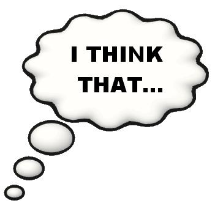

IELTS Writing Task 2 - giving opinion
In this guide you'll learn how to answer IELTS writing task 2 questions that ask you to give your opinion. This type of questions is very similar to agree/disagree questions: it states two opposite views and asks you to give your opinion.
In this lesson you will see IELTS writing task 2 sample question + model answer and learn
- how to choose your opinion
- how to generate arguments
- how to give a band 9 answer for giving opinion question
IELTS giving opinion question
Let’s look at an example of IELTS writing task 2 question that asks you to give your opinion:
You should spend about 40 minutes on this task.
Some people believe that violence on television and in computer games has a damaging effect on the society. Others deny that these factors have any significant influence on people's behaviour. What is your opinion?
Write at least 250 words
Choose your opinion & generate arguments
First of all, you need to choose your opinion out of the two given ones. For the task above, you need to choose from these opinions:
- violence in media has a damaging effect on the society
- violence in media doesn’t have a damaging effect on the society
Then, you have to generate your arguments for the chosen opinion. Let’s figure out some supporting points for each of the given opinions:
- violence in media has a damaging effect on the society
- people often copy actions they see on TV
- violent video games teach people that aggressiveness is normal in everyday life
- you have an example of the connection between violence in media and social violence
- violence in media doesn’t have a damaging effect on the society
- people act from their motives, regardless what they see on the television
- video games and television can reduce social violence by providing a safe outlet for aggressiveness
- you have never seen the connection between violence in media and social violence
For our essay, we’ll choose the second opinion.
How to answer this task?
-
Introduction
Paraphrase the statement (sentence 1) and give your own opinion (sentence 2):
These days, the amount of violence in media is growing. While some people argue that this trend will undoubtedly lead humans to dangerous future, others claim that it has no damaging effect on the society. I believe that in most cases media violence doesn't affect people's behavior.
-
Body paragraphs
Describe each argument to support your opinion in a separate paragraph. Your essay should have 2-3 body paragraphs. Use linking structures, vocabulary to write essays and some words from academic wordlist:
Firstly, I think that people act from their motives, regardless what they see on the television. That is to say, if someone intends to do harm to somebody, that is not because of watching TV or playing computer games, but due to that person's character and education. Although it is generally considered that violent media accustoms viewers to cruelty, I doubt this opinion. In my view, reasonable and intelligent people treat others humanely irrespective of what they see or hear in fictional stories.
Moreover, video games and television may even reduce social violence by providing a safe outlet for aggressiveness. In other words, truculent people may fight in virtual reality instead of evincing their combative spirit in real world. This may not only help those people, but also reduce the level of social violence in long-term perspective.
Finally, despite many claims and assumptions about negative effects of television and computer games I have never seen any proven connection between violent media and illegal activities in social life. -
Conclusion
In the conclusion paragraph briefly summarize what you have written and restate your opinion:
Taking everything into consideration, I would say that violence in contemporary media has no substantial influence on people's behavior. Television and computers are not the main factors that shape personal character, and they can even be useful in reducing the level of violence.
Model answer
These days, the amount of violence in media is growing. While some people argue that this trend will undoubtedly lead humans to dangerous future, others claim that it has no damaging effect on the society. I believe that in most cases media violence doesn't affect people's behavior.
Firstly, I think that people act from their motives, regardless what they see on the television. That is to say, if someone intends to do harm to somebody, that is not because of watching TV or playing computer games, but due to that person's character and education. Although it is generally considered that violent media accustoms viewers to cruelty, I doubt this opinion. In my view, reasonable and intelligent people treat others humanely irrespective of what they see or hear in fictional stories.
Moreover, video games and television may even reduce social violence by providing a safe outlet for aggressiveness. In other words, truculent people may fight in virtual reality instead of evincing their combative spirit in real world. This may not only help those people, but also reduce the level of social violence in long-term perspective.
Finally, despite many claims and assumptions about negative effects of television and computer games I have never seen any proven connection between violent media and illegal activities in social life.
Taking everything into consideration, I would say that violence in contemporary media has no substantial influence on people's behavior. Television and computers are not the main factors that shape personal character, and they can even be useful in reducing the level of violence.
(255 words)